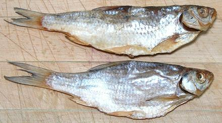

Common Rudd

[Scardinius erythrophthalmus]
This fish, native to most European rives and estuaries, has been
introduced in the United States, Canada, Spain, New Zealand, Tunisia,
Morocco, and Madagascar. It can be a serious invasive pest where
introduced. This fish can grow to over 20 inches and 4.6 pounds, but
is commonly under 8 inches. In North America it is most often found
salted and dried in markets serving Russian, Ukrainian and Armenian
communities. The photo specimens were 7-1/2 inches long and weighed
about 0.9 ounces each. It is caught wild and farmed, Red List rated
LC (Least Concern).
More on Carp Family.

Buying:
This fish is easily available, vacuum packaged in
clear plastic, in the refrigerated section of any market serving a
Russian, Ukranian or Armenian community - which means it is very
common here in Los Angeles. It is completely interchangeable with the
closely related Vobla (Common Roach). It is cheap in Russia, but not
so much so around here. I have purchased it for 2017 US $9.99 /
pound.
Eating:
These instructions and the photo to the left
are from our Vobla / Common Roach page, a nearly identical fish. This
dried fish is heavily salted, flat, thin, completely covered with large
hard scales, full of bones and stiff as a board - so how do you eat this
thing? Do you really want to eat this thing? No you don't - not until
you've eaten one - they're kind of addictive - so here's how to acquire
the addiction. Please note, this is not something you want to do when
you are in a hurry, or have plans to go somewhere.
- First, you need beer. You cannot eat Vobla without beer - and plenty
of it - preferably Russian beer. Around here that is most commonly
Baltica. This bottled beer has the unique advantage of a ring pull cap,
like on a can. No other sauce or condiment is used, but Vobla goes well
with conversation.
- Hold the fish firmly and Pull out all the fins.
- Now, open the belly of the fish (it has been disemboweled, because it
is illegal to sell it otherwise, at least in "over regulated"
California - botulism risk). Pry it open and squish it down flat,
inside up. Yes, it's ugly as sin, but sin does have its attractions,
no?
- Pull out the backbone. The thickest and easiest to recover flesh is
above the backbone.
- Pull off small bits of flesh from the inside as you can find them,
picking off any tiny bones, as best you can.
- Pop a little piece in your mouth and chew, along with a generous
swig of beer.
- When no more flesh can be found, discard the debris - and send
someone out for more Vobla, and more beer.
sf_cruddz 170415 - www.clovegarden.com
©Andrew Grygus - agryg@clovegarden.com - Photos
on this page not otherwise credited © cg1
- Linking to and non-commercial use of this page permitted